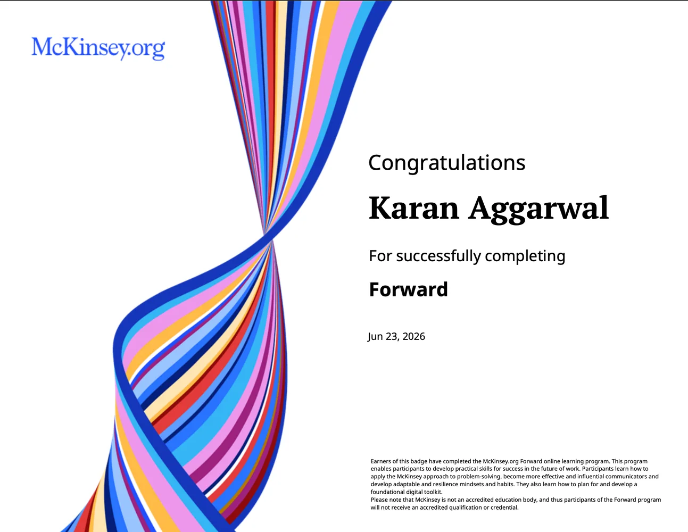
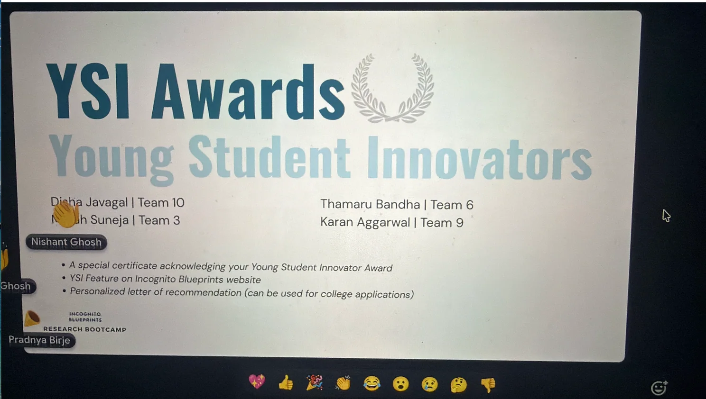
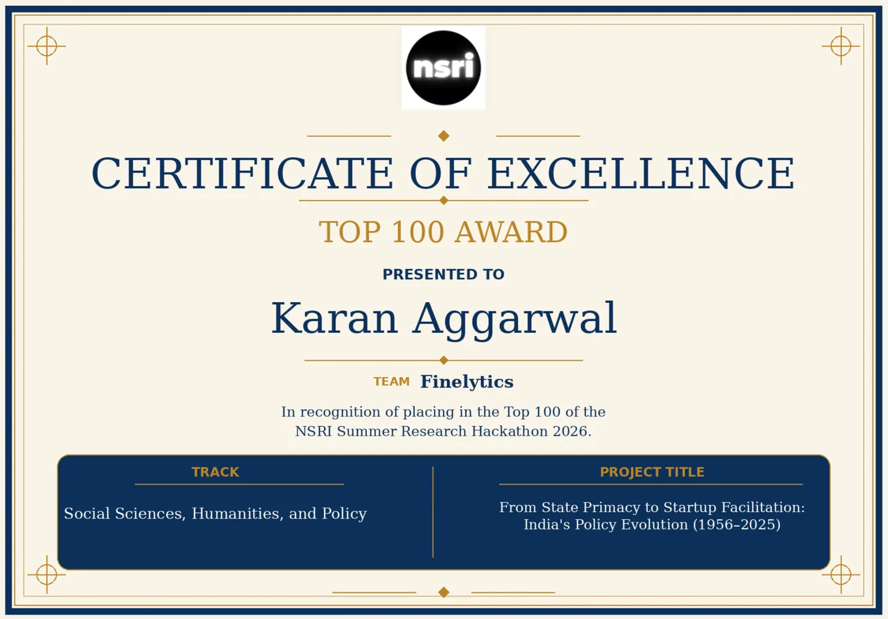
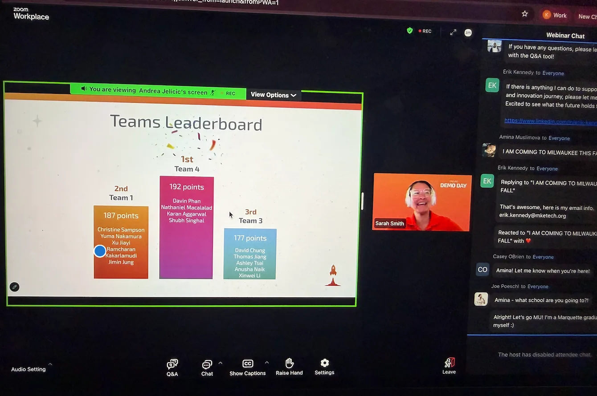
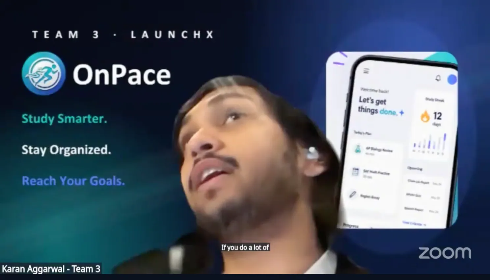
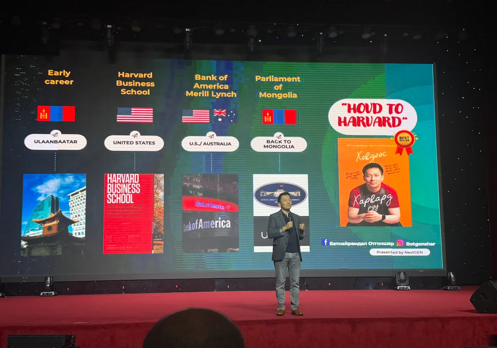
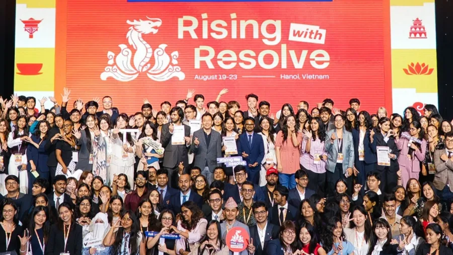
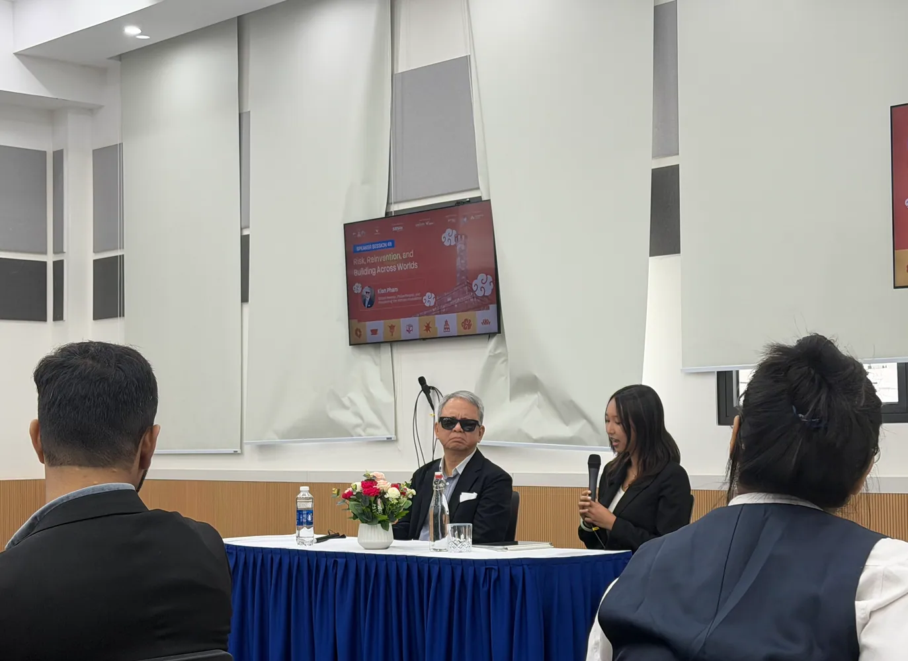

When I finished school, I thought I would finally have some time to relax. That did not really happen.
The last few months have somehow turned into a combination of summer courses, research projects, entrepreneurship programmes, MUNs, HPAIR, writing competitions, volunteering, certifications, and a fairly unreasonable number of other things that I kept saying yes to.
Looking back, I don't think I planned it at all. I was mostly trying things that sounded interesting, and then trying to figure out how to fit the next thing into an already full calendar.
That interest in economics and how people make decisions eventually took me into research.
What I liked about the program was that it took us beyond simply having an interesting question and pushed us toward actually building a research project around it.
The hardest part was probably coordinating everything across three different time zones while simultaneously trying to build something people would actually use.
It was a useful reminder that I enjoy the process of taking an idea from “this might be useful” to “someone is actually willing to pay for this.”
At that point there was not much I could do except continue without it.
I think that experience taught me something that practising a presentation perfectly probably could not have taught me.
A small discussion where everyone is actually able to ask questions and disagree is often more memorable than a huge auditorium.
At the end of the simulation, I received the Best Speaker award.
That experience gave me a kind of confidence that an award probably couldn't. I didn't become more independent because somebody told me I was. I became more independent because I had to be.

Research, experiments and teams
Alongside Cornell, Harvard, Yale and Johns Hopkins coursework, I worked on AI and hiring, online auction research through SISTER, and entrepreneurship programmes. Those efforts also involved mentors and teammates who made the work possible.




Conferences and conversations
HMUN India and HPAIR Asia were not simply award ceremonies. They were opportunities to test ideas, present work, navigate setbacks and meet people with very different perspectives.




This is an on-site curated adaptation of my longer 5 September 2026 article, not a word-for-word reproduction of every paragraph. Individual passages above are drawn from the original article.
Back to writing archive ↗